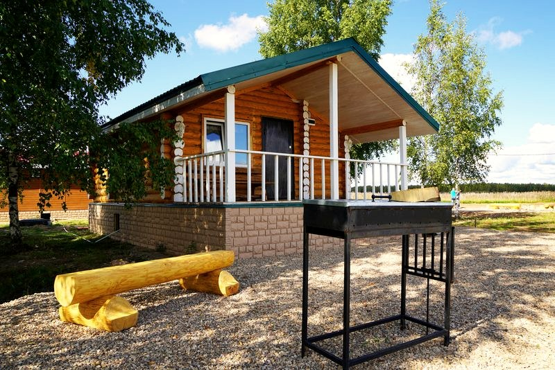

До 4 гостей · 50 м² · 1-я линияДома деревенские №1 и №2
от 4 800 ₽ / сутУютные одноэтажные срубы из натурального рубленного бревна с ароматом дерева и видом на Селигер. Две отдельные спальни (двуспальная кровать + две односпальные) и светлая кухня-гостиная.
- 50 м² · 1 этаж · 2 спальни
- Кухня с плитой, СВЧ и посудой
- Терраса со столом и свой мангал
- Санузел, душ, горячая вода, ТВ